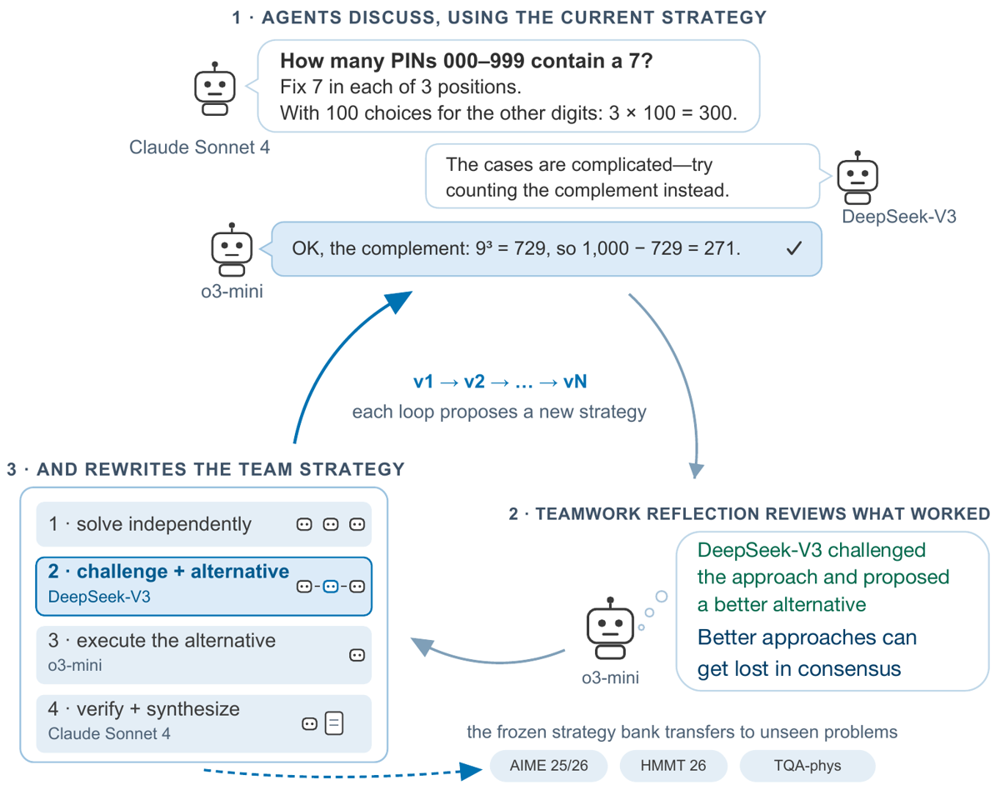
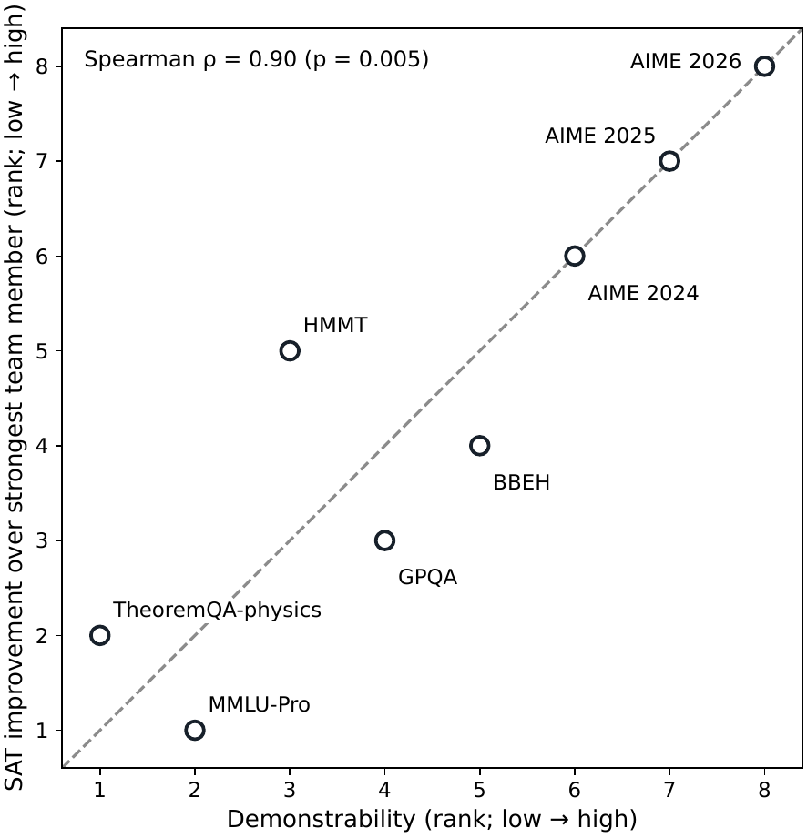
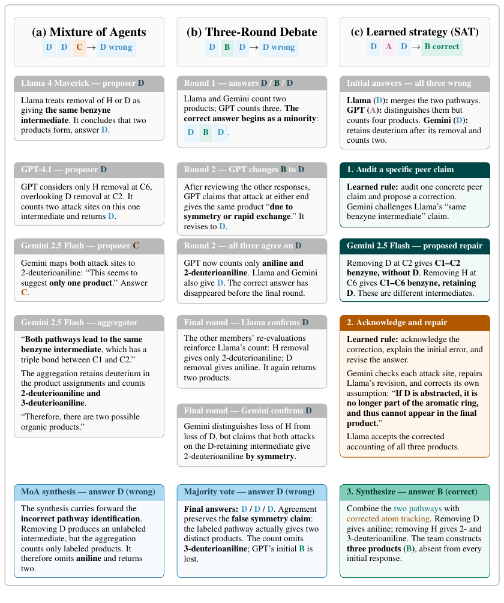

TL;DR — une équipe fixe de 3 LLM hétérogènes apprend hors-ligne, par recherche évolutionnaire pilotée par un de ses membres, une banque de 10 « stratégies de teamwork » (rôles persistants, phases conversationnelles, participation, flux d'information) ; la banque est gelée puis transférée telle quelle sur des benchmarks non vus, et un membre-juge sélectionne la réponse finale parmi les 10 certificats produits.
Claim principal, précisément : sur 5 benchmarks math/physique, l'équipe atteint 66,7 % de précision moyenne contre 48,8 % pour son meilleur membre, 58,7 % pour une linéarisation compute-matched du meilleur membre et 59,0 % pour un routing oracle (sélecteur parfait par problème sur les réponses individuelles des membres) [Abstract ; Tab. 1]. Dépasser le routing oracle est le claim fort : il établit que l'interaction fabrique des solutions que la sélection parmi les sorties individuelles ne peut pas récupérer.
Claim secondaire, le plus intéressant pour nous : sur 8 benchmarks, la demonstrability (taux auquel un panel de 10 juges hors-roster distingue un raisonnement correct d'un incorrect) suit le gain de l'équipe sur son meilleur membre, Spearman ρ = 0,90 / p = 0,005 [§5 ; Tab. 5–6]. Autrement dit : la collaboration ne paie que là où la correction est reconnaissable.
⚠️ Ce n'est pas un papier d'environnement RL. Il est classé A ici parce que deux de ses artefacts — le prompt de juge « audit de certificat » et la métrique de demonstrability — répondent frontalement au point dur du juridique : concevoir un vérifieur là où il n'y a pas de vérité exacte.
Roster fixe A = {a_0, a_1, a_2}. Une stratégie est P = (S, τ, α) :
- S = [s_1 … s_K] : liste ordonnée de phases conversationnelles ;
- τ : teamwork prompt partagé, normes de collaboration pour toute l'équipe ;
- α = {α_i} : role prompts persistants par agent, valables sur toutes les phases.
Chaque phase s_k = (A_k, r_k, f_k, π_k, ρ_k) :
- A_k ⊆ A : participants de la phase ;
- r_k : nombre de rounds de discussion ;
- f_k ∈ {L, S} : mode de flux d'information ;
- π_k : prompt de phase partagé ;
- ρ_k : prompts de phase par agent (optionnels).
f_k. Sous L (local), seuls les participants de la phase reçoivent les tours. Sous S (summary), l'échange reste local pendant la phase ; ensuite un participant tiré au hasard résume ses points clés, conclusions et position courante, et ce résumé est injecté dans le contexte de tous les membres [§2.1].neglected_effects_challenge [App. A.2]).r_k = 1 partout, dans les 20 stratégies. K va de 2 à 3 phases (banque AIME, 23 phases au total) et de 3 à 5 phases (banque GPQA, 38 phases au total). Presque toutes les phases ont A_k = {0,1,2} ; exceptions : divergence_reconciliation P2 = {0,1} [App. A.1] et discrepancy_and_contradiction_audit P2 = {2} [App. A.2]. Le mode S n'est utilisé qu'une seule fois dans les deux banques (final_auditor_claim_recovery P3 [App. A.2]) — tout le reste est en flux local.P_init retombe sur la réponse finale d'un membre tiré au hasard s'il n'existe pas de majorité stricte [App. B]. Le parsing des réponses est délégué aux graders (math-verify, checker MathArena pour HMMT 2026, exact-match sur la lettre pour MMLU-Pro, logique officielle BBEH) [App. D]. Des échecs de parsing existent bel et bien : sur AIME 2026 II-08 une des trois réponses initiales est « unparsed » [Fig. 11]. Leur traitement est non précisé.En additionnant les phases de App. A (r = 1 partout, 3 participants sauf 2 exceptions) et en comptant 3 solutions indépendantes initiales par exécution de stratégie :
- banque AIME : ≈ 10×3 + 3×23 − 1 ≈ 98 appels modèle par problème, + 1 appel juge ;
- banque GPQA : ≈ 10×3 + 3×38 − 2 ≈ 142 appels par problème, + 1 appel juge.
Si les 3 solutions indépendantes sont partagées entre les 10 stratégies (le papier ne tranche pas), lire plutôt ≈ 72 et ≈ 117. Dans tous les cas : ordre de 10² appels par problème. À comparer aux 10 appels de self-consistency K = 10, que le papier marque pourtant « ‡ compute control » [Tab. 1]. Voir §4 et §7.
(1) o3-mini — invariant et méthode de comptage : « For each prime p, the sorted exponent list is invariant, so the final k-th smallest number is ∏ₚ p^{E_k(p)}. Counting by ⌊2100/p^m⌋ − ⌊2100/p^{m+1}⌋ : E₂₀₂₆(2)=4, E₂₀₂₆(3)=3, E₂₀₂₆(5)=2… For p=23 : 2009+88=2097. » (2) o3-mini — factorisation avec un comptage faux : « Final factorization 2⁴·3³·5²·7·11·13·17·19·23 ; divisor count (4+1)(3+1)(2+1)(1+1)⁵. » (3) DeepSeek-V3 — réparation : « There are 6 primes (7,11,13,17,19,23) with exponent 1, not 5. So τ(N) = (4+1)(3+1)(2+1)(1+1)⁶ = 5·4·3·64 = 3840. » (4) Claude Sonnet 4 — audit indépendant : « p=2 : 131−65=66, cumulative 2035, and 2026 ≤ 2035, so E₂₀₂₆(2)=4. The p=3 and p=5 counts also check ; τ = 5×4×3×2⁶ = 3840. » (5) o3-mini — synthèse : « N₂₀₂₆ = 2⁴·3³·5²·7·11·13·17·19·23 ; τ = (4+1)(3+1)(2+1)(1+1)⁶ = 3840. Final answer : 3840. »
C'est le cas canonique du papier : un membre fournit la structure, un autre répare une erreur locale, un troisième audite. La réponse n'existait dans aucune des 3 sorties indépendantes.
Il faut distinguer trois vérifieurs, que le papier ne sépare pas explicitement mais qui ont des propriétés très différentes.
math-verify (AIME, TheoremQA-physics), checker spécifique MathArena (HMMT 2026), exact-match sur la lettre gold (MMLU-Pro), logique d'évaluation officielle (BBEH) [App. D].You are selecting the best proof-of-work certificate for one {benchmark_name} problem.
You are given the problem and all candidate final team certificates produced by a strategy bank. Choose the candidate whose final answer is best supported by its written certificate.
You are auditing written certificates, NOT solving the problem.
Rules: - Do not solve the problem yourself, and do not select or reject a candidate because its answer matches or conflicts with your own solution, estimate, or intuition about the answer. - Judge only certificate quality: are the load-bearing steps written down and locally checkable, is the arithmetic correct as written, is the case analysis complete, and does the final transition to the stated answer follow from the established steps? - You may reject or downgrade a candidate ONLY by naming a specific local defect in its written certificate: a step that does not follow from the previous ones, an arithmetic error you can point to, a missing case, an unjustified assumption, or a final transition not supported by the steps. "I believe the answer is different" or "it conflicts with another candidate's derivation" are NOT defects. - For each candidate, record all such defects in a named_defects list; use an empty list if no specific defect is identified. - Do not use answer frequency while auditing; audit every certificate on its written content alone. Frequency enters ONLY through the mandatory tie-break rule in stage 2. - If every certificate is flawed, choose the least-bad candidate and name its remaining defect.
Work in two stages, strictly in this order: 1. AUDIT: write a structured audit entry for EVERY candidate, based only on its written certificate. 2. DECIDE: only after all audits are written, compare the audits and select the certificate with the strongest written support. MANDATORY TIE-BREAK: if more than one candidate has an empty named_defects list, you MUST select from among those defect-free candidates the one whose final answer is the most common answer within that defect-free set; if frequencies are tied, prefer the certificate whose audit shows the most complete, explicit support. Do not override this tie-break with prose-quality preferences.
Problem ({benchmark_name}): {problem}
Candidate certificates: {candidate_certificates}
La version multiple-choice [App. D.1.2] est identique à trois substitutions près : « option label » au lieu de réponse libre, « load-bearing claims and decisive steps », et l'ajout de « unsupported option elimination » à la liste des défauts nommables.
Les quatre choix de design à retenir : (i) interdiction explicite de résoudre le problème ; (ii) rejet uniquement par défaut local nommé, le désaccord avec sa propre intuition n'est pas un défaut ; (iii) deux stages séquentiels obligatoires AUDIT puis DECIDE ; (iv) tie-break par fréquence parmi les candidats sans défaut.
Aucun RL, aucun gradient, aucun poids modifié. C'est une recherche évolutionnaire réflexive (famille GEPA) sur un artefact textuel : la stratégie P = (S, τ, α) [§2.1–2.2]. Les auteurs positionnent explicitement la différence avec GEPA [agrawal2026gepa] : GEPA tire un parent stochastiquement d'une frontière de Pareto par instance avant qu'un LM propose une mutation réflexive ; ici, le membre désigné choisit lui-même quelle stratégie archivée étendre et comment la muter, après inspection des résultats sur le problème source, des scores de probes et du comportement de l'équipe [§2.2].
Donc : hyperparamètres RL (KL, coefficient, référence, taille de groupe, calcul et normalisation de l'advantage, clipping, on/off-policy, LR, batch, nombre de steps) — sans objet. Le papier n'en rapporte aucun et n'en a pas besoin.
C'est ici qu'il faut être précis, parce que le titre (« teams learn ») suggère un apprentissage multi-agent qui n'a pas lieu.
Le crédit va à la stratégie entière, pas aux agents. Le signal est binaire par exécution : la stratégie candidate résout-elle son problème source ? [§2.2]. Puis, si oui, un score de transfert sur 5 validation probes. Aucun advantage par agent. Aucun contrefactuel leave-one-agent-out. Aucune décomposition du reward par tour, par phase ou par membre. Les agents sont des modèles API gelés : il n'y a structurellement rien à créditer chez eux.
Le crédit inter-agents existe, mais il est purement verbal. Le membre désigné (o3-mini pour AIME, Gemini-2.5-Flash pour GPQA) lit les transcripts, les réponses par membre, les résultats d'équipe et les scores de probes, puis attribue qualitativement, en langage naturel, des forces et des faiblesses à des slots d'agents, qu'il encode ensuite dans les role prompts α et dans les ensembles participants A_k [§2.2 ; Fig. 3b]. Trois exemples verbatim des banques déployées :
- final_auditor_claim_recovery [App. A.2] — l'Agent 2 devient « final auditor », chargé de « preventing collaboration-induced loss of well-supported individual claims ». Le diagnostic qui l'a produit est recopié [Fig. 3b] : « a regression in cross-train performance » … « individual correct answers were lost due to team dynamics » → « leveraging the observed strength of Agent 2 as an auditor/challenger » → rôle assigné.
- weighted_derivation_consensus [App. A.1] — teamwork prompt : « Apply a weighted consensus mechanism during discussion: if one agent's answer (notably agent 2) consistently deviates, reduce its weight in forming the final answer. »
- divergence_reconciliation [App. A.1 ; Fig. 4b] — DeepSeek-V3 (Agent 2) est retenu comme source de diversité mais exclu de la phase de vérification (P2 = {0,1}), o3-mini et Claude vérifiant indépendamment son raisonnement contesté.
→ C'est bien une assignation de crédit inter-agents, mais produite par un LLM en prose, non identifiable, non mesurée, et estimée sur 15 (ou 25) problèmes.
Blindage des identités. Les identités des modèles sont masquées pendant la réflexion — le réflecteur ne voit que « Agent 0/1/2 » [Fig. 3]. Le crédit est donc inféré du comportement observé, pas du nom du modèle. C'est un bon choix de design, et c'est ce qui rend les rôles appris non triviaux.
Budget de recherche : 6 rounds de mutation par problème source × ≤ 3 candidates par round [§2.2] → ≤ 18 candidates/problème, × 15 ou 25 problèmes. Chaque candidate qui résout sa source est rejouée sur 5 probes. Aucun chiffre de compute total, de tokens ou de coût n'est donné nulle part.
Sélection finale : greedy sur la couverture train → banque ≤ 10 stratégies complémentaires, gelée avant toute évaluation [§2.2].
Garde-fou anti-fuite : une instance séparée du modèle réflecteur fait un « semantic source-dependence audit » de chaque champ de chaque candidate et exclut celles qui encodent des valeurs de réponse, des faits ou configurations spécifiques au problème, ou des recettes de solution dérivées de la source [§2.2]. Les auteurs affirment qu'aucune phase, rôle ou teamwork prompt des banques déployées ne nomme un problème de test [App. A] — lecture des banques : c'est exact.
Le papier marque « ‡ compute controls » sur quatre lignes : self-consistency, self-reflection, linearization, homogeneous team [Tab. 1–2]. Elles ne sont pas de même qualité :
| Baseline | Appariement revendiqué | Réalité |
|---|---|---|
| Linearization | « serially carries out every role and phase in each learned strategy at approximately the team's total inference budget » [§3] | ⚠️ « approximately », jamais chiffré : aucun décompte de tokens, d'appels API ou de coût nulle part dans le papier. C'est néanmoins le seul contrôle single-agent structurellement correct (même structure de stratégie, un seul modèle). |
| Homogeneous team | 3 copies du meilleur membre exécutant les mêmes stratégies gelées [§3] | ✅ Réellement apparié en compute et en structure. C'est le contrôle le plus informatif du papier, et il isole proprement l'hétérogénéité : 56,0 vs 66,7 en math [Tab. 1], mais 70,9 vs 72,8 en knowledge/logic [Tab. 2] — soit +0,7 seulement hors des maths. |
| Self-consistency K=10 | « matches the number of candidate solutions » [§3] | ❌ Apparié sur le nombre de candidats, pas sur le compute. 10 appels modèle contre ≈ 10² pour SAT (§2). Écart d'environ un ordre de grandeur. Le libellé « ‡ compute control » est trompeur. |
| Self-reflection | 5 passes [§3] | ❌ Non apparié ; 5 passes contre ≈ 10² appels. |
| Member-vote / Debate (3 rounds) / MoA | aucun appariement revendiqué | Debate 3 rounds ≈ 3 + 3×3 = 12 appels : très en-deçà de SAT. |
Verdict sur la question posée : les baselines single-agent ne reçoivent pas toutes le même budget de compute au test. Seules linearization (approximativement, non chiffrée) et homogeneous team (exactement) sont de vrais contrôles. Les gains de SAT sur self-consistency, self-reflection, debate et MoA sont partiellement des gains de compute, non isolés. Les deux comparaisons qui survivent à cette objection sont : SAT vs linearization (66,7 vs 58,7 en moyenne, mais égalité à 39,4 sur HMMT26 et seulement +2,7 sur AIME26) et SAT vs routing oracle (qui n'est pas une baseline de compute mais un plafond de sélection).
Collaboration-induced loss — des réponses individuelles correctes sont détruites par la dynamique d'équipe. Détection : le membre réflecteur lit les transcripts (« individual correct answers were lost due to team dynamics ») [Fig. 3b]. Correction : le rôle d'auditeur final, final_auditor_claim_recovery, qui re-présente les claims bien étayés omis avant adjudication [App. A.2]. Ce failure mode est visiblement structurant : 6 des 10 stratégies de la banque GPQA portent explicitement sur la préservation de la minorité (constructive_challenge_and_preservation, final_auditor_claim_recovery, minority_evidence_adjudication, corrective_step_audit, discrepancy_and_contradiction_audit, option_conditions_and_absence_audit) [App. A.2].
Régression cross-train — une stratégie qui aide sur son problème source régresse ailleurs. Détection : les 5 validation probes [§2.2]. Correction : sélection coverage-greedy, qui élimine les stratégies sans couverture croisée.
Debate → unanimité fausse — sur GPQA Diamond 132, la majorité initiale est fausse (Llama et Gemini en D), GPT a la bonne réponse B ; l'analyse de premier round de Gemini assimile à tort deux produits du chemin deutéré ; GPT adopte cette équivalence et bascule vers D, Llama suit. La majorité fausse devient unanime et 3-deutérioaniline disparaît [Fig. 10b]. Correction : SAT, sur le même problème, part de trois réponses fausses (D/A/D) et remonte à B par audit de claim ciblé et aveu d'erreur explicite [Fig. 10c].
MoA propage une erreur d'agrégation — l'agrégateur fusionne les intermédiaires de retrait de H et de D, retient à tort le deutérium, compte 2- et 3-deutérioaniline mais omet l'aniline, et renvoie D [Fig. 10a].
Membre injecteur d'erreurs — DeepSeek-V3 produit des dérivations alternatives qui attrapent des cas manqués par les autres, mais introduit aussi des erreurs. Détection : réflexion sur les transcripts [§4]. Correction : divergence_reconciliation le garde comme source de diversité tout en l'excluant de la phase de vérification, confiée à o3-mini + Claude [Fig. 4b, App. A.1]. Contribution isolée intéressante : la correction n'est pas d'évincer le membre bruité mais de le confiner à la génération et pas à la vérification.
Suppression de la minorité correcte par erreur partagée — sur AIME 2026 II-01 (gold 178 ; réponses initiales 032/178/032), deux membres partagent la même erreur localement vérifiable (indices de terme négatifs). Détection : un step audit de Claude nomme l'erreur (« reaching 24 requires k = −19 — but a term index must be positive »). Résultat : les deux membres faux révisent, la minorité correcte survit — là où le vote l'aurait écrasée [Fig. 12].
Gap génération / reconnaissance — couverture 87,9 % contre accuracy 72,8 % sur knowledge/logic [Tab. 2]. Détection : rapport systématique des deux métriques. Non corrigé ; explicitement reconnu comme la limite principale [§7] : « richer generation does not guarantee correct selection ».
Le papier n'en mentionne aucun cas. C'est plutôt crédible vu la conception : le reward de la boucle d'optimisation est un exact-match vérifié mécaniquement [App. D], sans juge LLM dans la boucle — la surface d'attaque est mince, et le seul canal de fuite (contenu spécifique au problème dans les prompts) est explicitement audité [§2.2].
⚠️ Mais deux dégénérescences sont lisibles dans les artefacts eux-mêmes, non relevées par les auteurs :
weighted_derivation_consensus instruit d'« assigner une influence plus élevée aux agents dont les dérivations passées s'alignent sur la majorité (agents 0 et 1) et une influence plus basse à l'agent 2 si la divergence persiste » [App. A.1]. C'est une règle ad hoc, estimée sur 15 problèmes, qui supprime systématiquement la minorité — exactement le failure mode contre lequel minority_reasoning_challenge est conçue, dans la même banque [App. A.1]. Les deux stratégies coexistent et sont exécutées sur chaque problème. La tension n'est pas discutée.Le plus notable : les stratégies apprises encodent des avantages comparatifs spécifiques aux modèles (DeepSeek confiné à la génération, Gemini promu auditeur) alors même que les identités des modèles étaient masquées pendant la réflexion [Fig. 3]. Le réflecteur a donc inféré une typologie de rôles depuis le comportement seul.
Quasi-intégralement non précisé. Aucun débit de rollouts, aucune mention sync/async, aucun parallélisme d'environnements, aucun goulot d'étranglement identifié, aucun coût par step ou par rollout, aucun décompte de tokens, aucune heure GPU/TPU, aucun coût API en dollars. Aucune mention d'un framework ou d'une librairie.
Ce qu'on peut reconstituer : - Modèles propriétaires appelés par API (o3-mini, Claude Sonnet 4, Gemini-2.5-Flash, GPT-4.1) et open-weights (DeepSeek-V3, Llama-4-Maverick) — le mode d'accès à ces deux derniers n'est pas précisé. - Phase d'apprentissage : ≤ 18 candidates/problème × 15 ou 25 problèmes, chaque candidate exécutée par l'équipe entière, les candidates réussies rejouées ×5 → ordre de 10³–10⁴ exécutions d'équipe pour construire une banque (mon estimation, ⚠️ non chiffrée par le papier). - Phase de déploiement : ≈ 70–140 appels modèle + 1 appel juge par problème (§2). - Le déploiement est embarrassingly parallel : les 10 stratégies sont indépendantes, seul le juge est séquentiel en aval. Le papier ne l'exploite ni ne le mentionne.
⚠️ Pour un papier dont le claim central est « nous battons des baselines compute-matched », l'absence totale de comptabilité de compute est le défaut méthodologique le plus lourd.
| Chiffre annoncé | Où il est annoncé | Source dans le papier | Verdict |
|---|---|---|---|
| « using only 15 mathematics and 25 graduate-level knowledge problems » | Abstract | §3 (splits 15 AIME-2024 / 25 GPQA Diamond) | confirmé |
| 66,7 % moyenne SAT, 5 benchmarks math/physique | Abstract, Intro, Fig. 1 | Tab. 1, col. Avg | confirmé |
| 48,8 % meilleur membre | Abstract, Intro, Fig. 1 | Tab. 1, ligne Best member, Avg | confirmé |
| 58,7 % « compute-matched inference by the strongest individual agent » | Abstract, Intro, Fig. 1 | Tab. 1, ligne Linearization (o3-mini), Avg | confirmé sur la valeur ; ⚠️ l'appariement de compute est qualifié « approximately » [§3] et jamais chiffré |
| 59,0 % routing oracle | Abstract, Intro, Fig. 1 | Tab. 1, ligne grisée Routing-oracle coverage, Avg | confirmé |
| « on AIME 2026, they exceed this router by 13,4 points » | Abstract, Intro | Tab. 1 : 71,2 − 57,8 = 13,4 | confirmé |
| « +17,9 points au-dessus du meilleur membre » | Fig. 1 (légende) | Tab. 1 : 66,7 − 48,8 = 17,9 | confirmé |
| « +7,7 pp au-dessus de la couverture du routing oracle » | Fig. 1 (légende) | Tab. 1 : 66,7 − 59,0 = 7,7 | confirmé |
| « 71,2 % sur AIME 2026, 29,0 pp au-dessus du meilleur membre » | Intro, §4 | Tab. 1 : 71,2 − 42,2 = 29,0 | confirmé |
| « 60,8 % sur AIME 2025, dépasse le routing oracle de 9,7 pp » | §4 | Tab. 1 : 60,8 − 51,1 = 9,7 | confirmé |
| Spearman ρ = 0,90, p = 0,005 sur 8 benchmarks | Abstract, Intro, §5, Fig. 6 | Tab. 6, ligne « None (all eight) » : ρ = 0,905, p = 0,005 | confirmé |
| ρ = 0,86–0,96 en leave-one-out | §5 | Tab. 6 : min 0,857, max 0,964 | confirmé |
| 72,8 % équipe knowledge/logic, meilleure moyenne des méthodes testées | Intro, §4 | Tab. 2, col. Avg | confirmé |
| « reste sous les 79,6 % du routing oracle » | Intro, §4, §7 | Tab. 2, ligne grisée, Avg | confirmé |
| « au moins un candidat correct sur 87,9 % des problèmes, dépassant le routing oracle sur chaque benchmark » | Intro, §4 | Tab. 2 : SAT coverage 94,0 / 91,0 / 78,7 vs oracle 84,0 / 88,0 / 66,7 | confirmé |
| 75,2 % de couverture SAT en math/physique, supérieure à l'oracle sur les 5 benchmarks | §4 | Tab. 1 : 93,3/73,3/73,3/54,5/81,6 vs 73,3/51,1/57,8/36,4/76,6 | confirmé |
| « In two independent settings, we learn teamwork strategies that transfer unchanged to unseen benchmarks » | Abstract | Tab. 2 : dans le 2ᵉ setting, SAT perd contre MoA sur MMLU-Pro (82,4 vs 84,3) et contre l'équipe homogène sur BBEH (56,0 vs 58,7), et ne dépasse la linéarisation que de 0,7 pp en moyenne | sur-généralisé — vrai pour le setting math/physique, très faible pour le setting knowledge/logic. L'Intro corrige honnêtement, l'Abstract non. |
| SAT > « compute-matched inference by that agent » (58,7) | Abstract | Tab. 1 : égalité à 39,4 sur HMMT26, et seulement +2,7 sur AIME26 (71,2 vs 68,5) ; l'écart moyen vient surtout de AIME24 (84,7 vs 74,0) et AIME25 (60,8 vs 43,3) | sur-généralisé — l'agrégat est confirmé, l'avantage per-benchmark ne l'est pas |
| « About 1,200 agents participated in the channel » (incident OpenAI / Hugging Face, juillet 2026) | Intro, §1 | Citation externe [openai2026huggingface, greenblatt2026huggingface, roose2026huggingface] | introuvable dans le papier — anecdote d'ouverture non vérifiable ici, sans portée sur les résultats |
Verdict 7.0 : tous les chiffres tabulés sont exacts et retrouvables ; l'arithmétique de l'abstract est juste. Les deux seules réserves sont des sur-généralisations de cadrage (l'abstract présente comme général un résultat qui ne tient franchement que sur la suite math/physique). Le corps du texte est notablement honnête sur ce point (§4 et §7 exposent la limite knowledge/logic sans la déguiser). → case coherence vraie.
Suite math/physique [Tab. 1], accuracy en % :
| Méthode | AIME24 (in-dist) | AIME25 | AIME26 | HMMT26 | TQA-phys | Avg |
|---|---|---|---|---|---|---|
| Best member | 64,4 | 40,0 | 42,2 | 26,3 | 71,1 | 48,8 |
| Self-consistency K=10 ‡ | 75,8 | 44,4 | 53,4 | 31,9 | 71,5 | 55,4 |
| Self-reflection ‡ | 71,1 | 41,1 | 52,2 | 29,3 | 72,2 | 53,2 |
| Linearization (o3-mini) ‡ | 74,0 | 43,3 | 68,5 | 39,4 | 68,4 | 58,7 |
| Member-vote | 60,7 | 38,5 | 40,9 | 25,3 | 71,3 | 47,3 |
| Debate (3 rounds) | 66,7 | 41,1 | 53,3 | 30,3 | 72,2 | 52,7 |
| Mixture of Agents | 75,6 | 46,7 | 57,8 | 32,3 | 74,0 | 57,3 |
| Homogeneous team (o3-mini) ‡ | 66,7 | 46,7 | 60,0 | 36,4 | 70,2 | 56,0 |
| SAT | 84,7 | 60,8 | 71,2 | 39,4 | 77,2 | 66,7 |
| Routing-oracle coverage | 73,3 | 51,1 | 57,8 | 36,4 | 76,6 | 59,0 |
| SAT coverage | 93,3 | 73,3 | 73,3 | 54,5 | 81,6 | 75,2 |
Suite knowledge/logic [Tab. 2] : SAT 80,0 / 82,4 / 56,0 → 72,8 ; linearization 79,0 / 84,0 / 53,3 → 72,1 ; MoA 72,0 / 84,3 / 57,3 → 71,2 ; homogeneous 78,0 / 76,0 / 58,7 → 70,9 ; debate 73,7 / 79,7 / 57,3 → 70,2 ; best member 72,7 / 79,7 / 45,3 → 65,9 ; routing-oracle coverage 84,0 / 88,0 / 66,7 → 79,6 ; SAT coverage 94,0 / 91,0 / 78,7 → 87,9.
⚠️ Sur la suite knowledge/logic, SAT n'est premier sur aucun benchmark sauf GPQA (in-distribution) et ne gagne la moyenne que de 0,7 pp sur la linéarisation. Le résultat fort du papier est donc confiné aux mathématiques de compétition.
Le design OOD est propre et c'est le meilleur aspect du papier : banque apprise sur 15 problèmes AIME-2024, gelée, déployée sans aucun contrôleur au test ni ré-réflexion sur (i) deux années de compétition ultérieures, (ii) une compétition différente (HMMT), (iii) un domaine différent (physique) [§3–4]. Les gains OOD ne s'effondrent pas : +20,8 pp sur AIME25, +29,0 sur AIME26, +13,1 sur HMMT26, +6,1 sur TQA-phys [Tab. 1]. Le transfert inter-domaine (physique) est le plus faible, et le transfert inter-suites (AIME → GPQA) n'est pas testé : les deux banques sont apprises et déployées séparément.
| Ablation | Chiffres | Ce qu'elle isole |
|---|---|---|
vs P_init (solutions indépendantes + 2 rounds de debate + vote majoritaire) [Tab. 4, App. B] |
math 54,1 → 66,7 ; knowledge 69,6 → 72,8 | La contribution de la recherche évolutionnaire elle-même : +12,6 pp en math, +3,2 pp seulement en knowledge. C'est l'ablation qui compte le plus, et elle confirme que l'essentiel du gain « apprentissage » est mathématique. ⚠️ P_init est évalué une seule fois par problème [App. B], contre 3 seeds pour SAT. |
| vs Homogeneous team (3× meilleur membre, mêmes stratégies gelées) [Tab. 1–2] | math 56,0 vs 66,7 ; knowledge 70,9 vs 72,8 | L'hétérogénéité du roster : décisive en math (+10,7), marginale ailleurs (+1,9). |
| vs Linearization (1 modèle, même structure, budget ≈ équipe) [Tab. 1–2] | math 58,7 vs 66,7 ; knowledge 72,1 vs 72,8 | L'interaction multi-agent (hétérogénéité comprise, les auteurs le reconnaissent [§3]). |
| Leave-one-benchmark-out sur la corrélation de demonstrability [Tab. 6] | ρ = 0,857–0,964, p = 0,003–0,024 | Robustesse de la corrélation à la suppression d'un point. |
Ablations manquantes, par ordre d'importance : (1) juge vs vote majoritaire sur la banque — indispensable vu le tie-break par fréquence ; (2) taille de la banque (1, 3, 5, 10 stratégies) ; (3) apport du flux S ; (4) apport de l'audit anti-fuite ; (5) juge hors-roster vs juge membre.
Aucun. Pas d'étude de la taille des modèles, du nombre de problèmes d'entraînement (15 et 25 sont des points uniques), de la taille du roster (n = 3 partout), ni de la taille de la banque (10 partout). ⚠️ Or « 15 problèmes suffisent » est un claim de scaling implicite qui n'est jamais testé — on ne sait pas si 5 auraient suffi ni si 100 auraient mieux fait.
P_init n'a qu'un seul run [App. B].Plausible mais fragile. L'architecture expérimentale (banque gelée, transfert sur 4 benchmarks dont 2 postérieurs aux modèles, routing oracle comme plafond) est de bonne facture et le résultat AIME est difficile à expliquer par la seule sélection. Mais : n minuscule sans barres d'erreur, aucune comptabilité de compute pour un claim « compute-matched », le résultat ne tient franchement que sur les mathématiques de compétition, et le second claim (demonstrability) repose sur 8 points, un panel de petits modèles non validé, et une variable explicative confinée entre 0,42 et 0,69. À répliquer avant de s'appuyer sur les chiffres ; à lire dès maintenant pour les artefacts de design (prompt de juge, notion de certificat, métrique de demonstrability), qui valent indépendamment de la validité des chiffres.

Ce qu'il faut voir : toute la boucle d'apprentissage est hors-ligne et opère sur un artefact textuel. Un membre désigné lit les échanges et les résultats passés, révise la stratégie, les candidates sont testées sur les problèmes d'entraînement, puis une banque complémentaire est gelée avant toute évaluation. Aucun gradient n'entre dans ce schéma : c'est une boucle d'évolution de prompts avec un reward binaire exact-match, où le seul « apprentissage » multi-agent est la prose que le réflecteur écrit dans les role prompts. La légende précise que dialogue et assignations de rôles sont illustratifs [Fig. 2].
Ce qu'il faut voir : la figure la plus utile du papier pour nous. Le rang de « à quel point un panel de juges distingue un raisonnement correct d'un incorrect » suit le rang de « à quel point la collaboration améliore le meilleur membre » (ρ = 0,90, p = 0,005 par permutation exacte sur 8 benchmarks). Lecture opérationnelle : avant de construire un environnement multi-agent ou un reward LLM-as-judge sur un domaine, mesurez d'abord si un juge sait reconnaître le bon raisonnement. ⚠️ À tempérer : c'est une corrélation de rangs sur 8 points, mesurée post hoc, les scores bruts vont de 0,423 à 0,687 [Tab. 5] — donc une amplitude de 0,26 autour du hasard — et le panel est fait de petits modèles anciens [App. E]. Les auteurs le disent eux-mêmes : « complementary but correlational » [§7].
Ce qu'il faut voir : le catalogue de failure modes de la collaboration, sur un même problème (bonne réponse B, trois produits). (a) MoA : l'agrégateur fusionne deux intermédiaires et retient à tort le deutérium → D. (b) Debate : majorité initiale fausse D/D, GPT part sur la bonne réponse B, puis adopte l'équivalence fausse de Gemini et bascule — la majorité fausse devient unanime, et la bonne réponse est détruite par la délibération. (c) SAT : les trois membres partent faux (D/A/D), mais la stratégie apprise impose d'auditer un claim précis d'un pair, de proposer une correction, puis de reconnaître explicitement sa propre erreur avant synthèse ; la bonne réponse émerge comme sous-produit de la réparation. La leçon transposable n'est pas « le multi-agent marche » mais « la délibération non structurée détruit la minorité correcte ; il faut un mécanisme explicite qui l'oblige à resurfacer ».| Ingrédient | Choix du papier | Équivalent juridique | Transfert | Ce qui manque |
|---|---|---|---|---|
| Source des tâches | 40 problèmes humains de benchmarks publics, aucun filtrage, aucune génération [§3] | Questions de Harvey LAB / Vals Legal Research Bench, ou un petit set d'annotation interne | direct — le point fort du papier est précisément qu'un artefact d'organisation s'apprend sur 15–25 problèmes | Le papier ne teste pas la sensibilité au volume ; on ne sait pas si 15 suffisent parce que la tâche est facile à organiser ou par chance. Et en droit la distribution de tâches est bien plus large qu'AIME. |
| Vérifieur | Exact-match mécanique pour la recherche (math-verify, MathArena, exact-match) [App. D] |
Aucun équivalent. C'est le point dur. | non | Le reward binaire qui pilote toute la recherche évolutionnaire n'existe pas en droit. Il faut le remplacer par autre chose — voir ligne suivante. |
| Sélecteur / juge | LLM-as-judge « audit de certificat » : interdiction de résoudre, rejet uniquement par défaut local nommé, deux stages AUDIT→DECIDE, tie-break par fréquence [App. D.1] | Juge sur mémos/notes juridiques : interdiction de re-rechercher, rejet uniquement en nommant un défaut local (citation inexistante, jurisprudence abrogée, juridiction inapplicable, saut de raisonnement, condition non traitée) | adaptable — c'est l'ingrédient n° 1 à transposer | Aucune validation humaine du juge dans le papier ; en droit il faut la faire. Et le tie-break par fréquence est à supprimer : en droit la fréquence d'une conclusion parmi des rollouts corrélés n'est pas un signal de vérité. |
| Notion de certificat | Trace de raisonnement courte, auto-suffisante, conçue pour être vérifiable pas à pas plutôt qu'une réponse nue [§2.2] | Mémo structuré en claims atomiques, chacun porté par une citation vérifiable et une condition d'application | direct — et sans doute plus naturel en droit qu'en maths : un mémo juridique est déjà un certificat | Le papier ne spécifie aucun schéma de certificat (format, granularité, champs obligatoires) ; à concevoir. |
| Harness / outils | Aucun outil, aucun retrieval, aucun sandbox — texte pur [§2.1] | Un env juridique a besoin de recherche documentaire, vérification de citation, vérification de date de validité | non — rien à réutiliser de ce côté | Tout le harness outillé est à construire ; le papier n'a rien à en dire. |
| Algo / optimisation | Recherche évolutionnaire réflexive sur prompts, reward binaire, crédit à la stratégie entière [§2.2] | GRPO/RLOO sur les poids de Gemini | non pour l'algo ; adaptable comme pré-étape bon marché : chercher une bonne organisation par prompt avant de dépenser du RL | Aucun pont vers l'optimisation de poids. Les auteurs l'évoquent seulement en future work (distiller le raisonnement multi-agent dans les membres) [§7]. |
| Curriculum | Aucun ; un archive indépendant par problème source, 6 rounds de mutation [§2.2] | — | non | Rien d'exploitable. |
| Anti-hacking | Audit sémantique de dépendance à la source par une instance séparée du modèle réflecteur + validation probes récompensant le transfert [§2.2] | Audit anti-mémorisation : vérifier qu'une stratégie/prompt appris n'encode pas une juridiction, une partie, un résultat de dossier | adaptable | Le papier ne mesure pas le taux de détection de son audit (combien de candidates exclues, faux positifs/négatifs). Tout est affirmé, rien n'est chiffré. |
| Baseline de référence | Routing oracle : sélecteur parfait par problème sur les réponses individuelles des membres [§1] | Best-of-N oracle sur des rollouts individuels du modèle de base | direct — à imposer comme baseline standard | Rien. C'est l'idée méthodologique la plus immédiatement réutilisable. |
| Métrique de diagnostic | Demonstrability : taux auquel un panel hors-roster distingue un raisonnement correct d'un incorrect, apparié A/B équilibré [§5, App. E] | Un panel de juges (ou 3–5 juristes) distingue-t-il un bon mémo d'un mémo plausible mais faux, sur une tâche juridique donnée ? | adaptable — ingrédient n° 2 | Le papier la mesure post hoc et ne s'en sert jamais pour guider la recherche [§7]. Il ne dit pas quel seuil rend un env viable. En droit, il faut un panel calibré contre des juristes, pas contre des modèles 4B. |
La séparation coverage / accuracy, instrumentée par la demonstrability.
Le papier fournit ce que la littérature RLVR ne donne jamais : une métrique de pré-vol qui dit si votre environnement va marcher avant de l'entraîner. Le raisonnement est directement applicable à Gemini Law :
- coverage = « le système produit-il au moins une bonne réponse parmi N ? » → mesure la génération ;
- accuracy = « la sélectionne-t-il ? » → mesure la reconnaissance ;
- l'écart entre les deux est exactement la qualité de votre vérifieur, mesurée sans avoir besoin d'un vérifieur exact.
Et le papier montre que cet écart n'est pas une nuisance mais la variable qui décide de tout : 8,5 pp là où la demonstrability est haute (maths), 15,1 pp là où elle est basse (knowledge/logic) [Tab. 1–2], avec ρ = 0,90 sur le gain final [Tab. 6]. Le droit est a priori du côté « basse demonstrability » : réponses longues, argumentées, plusieurs positions défendables. Mais le droit a un avantage que GPQA n'a pas — la vérifiabilité locale des citations. Une citation existe ou n'existe pas ; un arrêt est en vigueur ou abrogé ; une juridiction s'applique ou non. Cela suggère que la démontrabilité d'une tâche juridique est un paramètre de design du format de sortie, pas une fatalité : plus le mémo est décomposé en claims atomiques ancrés sur des sources vérifiables, plus la demonstrability monte, plus un juge-reward devient exploitable.
Le second ingrédient, presque aussi important : le prompt de juge « audit de défauts locaux nommés » [App. D.1]. Interdire au juge de résoudre la tâche et n'accepter un rejet que s'il nomme un défaut local précis est exactement le bon garde-fou pour un reward juridique, où un juge autorisé à « avoir son avis » rémunère le style plutôt que la justesse. Le prompt est recopié en §3 ci-dessus et réutilisable presque tel quel, moins le tie-break par fréquence.
Sur un sous-ensemble de Harvey LAB ou de Vals Legal Research Bench (n ≈ 100–150), sans aucun entraînement :
coverage@N : fraction des questions où au moins un candidat est correct ;
- accuracy avec un juge Gemini utilisant le prompt d'audit de défauts nommés, tie-break par fréquence retiré ;
- demonstrability : protocole App. E — paire (correct, incorrect), sans label, ordre A/B équilibré, panel de juges ; plus un panel humain de 2–3 juristes sur le même échantillon, pour calibrer le panel modèle contre l'humain, ce que le papier ne fait pas.Résultat attendu : coverage@N − accuracy de l'ordre de 15–25 pp (le droit devrait être pire que GPQA), une demonstrability de départ entre 0,55 et 0,65, et — c'est le pari à tester — une demonstrability qui monte nettement quand on force le format en claims atomiques sourcés. Si c'est le cas, on a la recette : le format de sortie devient un levier de conception du reward, et le juge audit-de-défauts devient exploitable comme reward RLVR. Si la demonstrability reste collée à 0,5 quelle que soit la granularité, le message est brutal mais utile : un reward LLM-as-judge sur mémo entier est du bruit, et il faut basculer sur des vérifieurs décomposés et mécaniques (existence de la citation, validité à la date, correspondance de juridiction) plutôt que sur un juge holistique. Dans les deux cas l'expérience est décisive, coûte quelques jours-juriste et aucun GPU, et doit précéder toute dépense de RL.
Mesure-t-on systématiquement coverage@N en plus de accuracy sur Harvey LAB et Vals ? Si l'écart est grand, le goulot d'étranglement de Gemini Law est la reconnaissance, pas la génération — et le budget doit aller à la conception du vérifieur (format de certificat, juge décomposé, vérification mécanique des citations) plutôt qu'à plus de rollouts ou à un modèle plus gros. Question subsidiaire : a-t-on un chiffre interne de demonstrability sur nos tâches juridiques, c'est-à-dire un taux auquel un juge — modèle ou juriste — distingue un bon mémo d'un mémo plausible mais faux ? Sans ce nombre, on ne sait pas si l'on conçoit un RLVR ou un générateur de bruit.